Es caro
Las comisiones suben cuando hay mucha demanda. En horarios pico, una transferencia puede costar varios dólares.
Bitcoin / Lightning
Bitcoin se entiende mejor cuando lo usás.
Una introducción clara a Lightning y una práctica guiada para crear, cuidar y usar tu primera wallet.

01 Sobre mí
Community Manager de La Crypta · Programador en mis ratos libres
Honestidad · Minimalismo · Humildad · Curiosidad
Más sobre mí en fierillo.world02 Comunidad
La mejor comunidad de Bitcoin de este lado de la galaxia.
Aprendemos Bitcoin haciendo: en La Crypta se come lo que se cocina.
Honestidad · Libertad · Sinergia · Racionalidad · Humildad · Mérito · Innovación
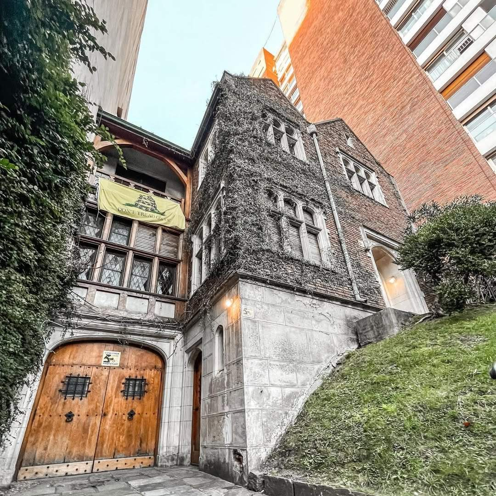
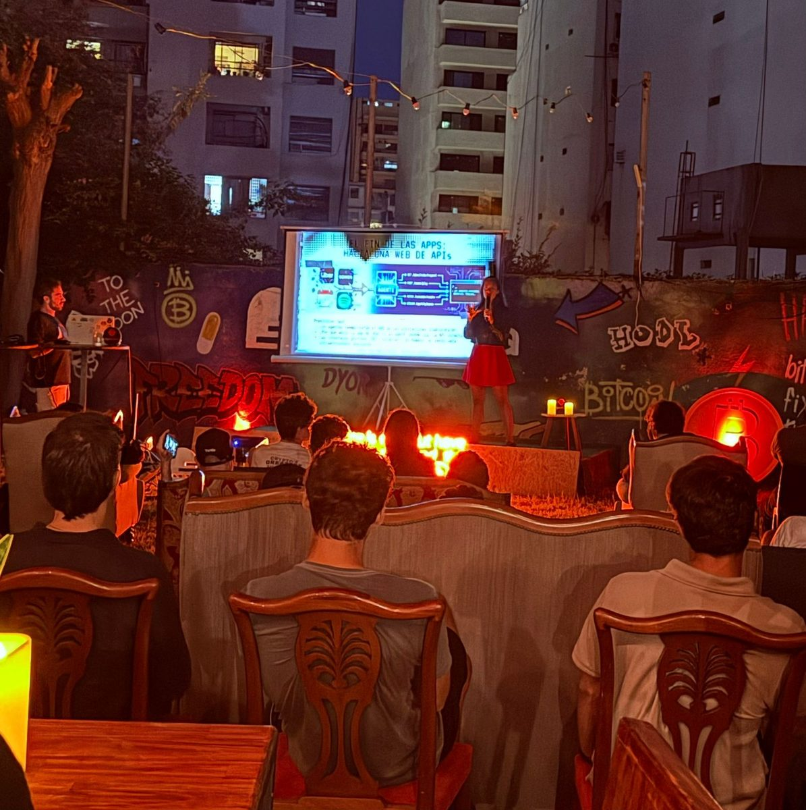
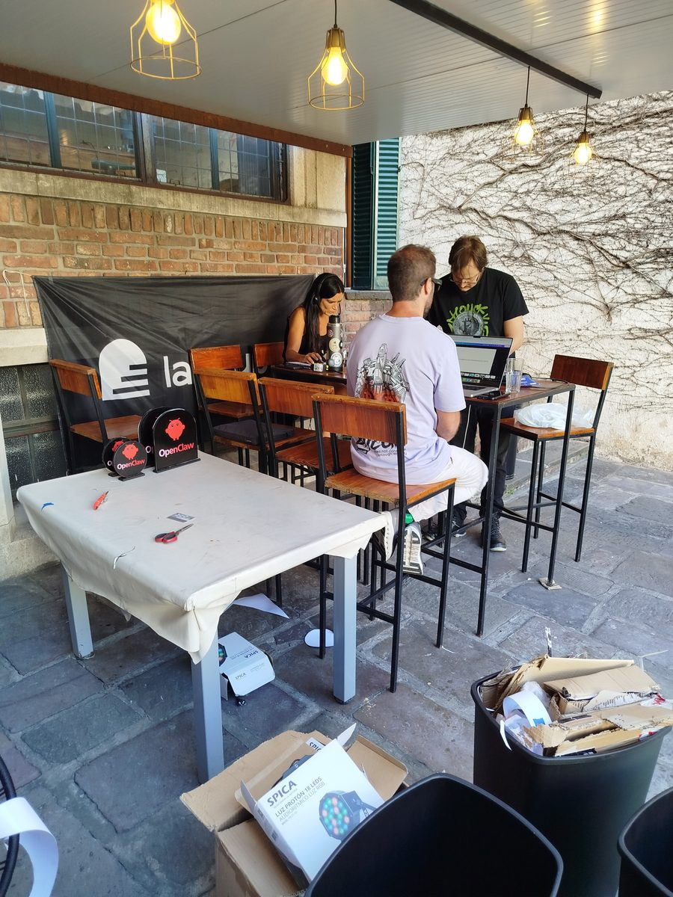
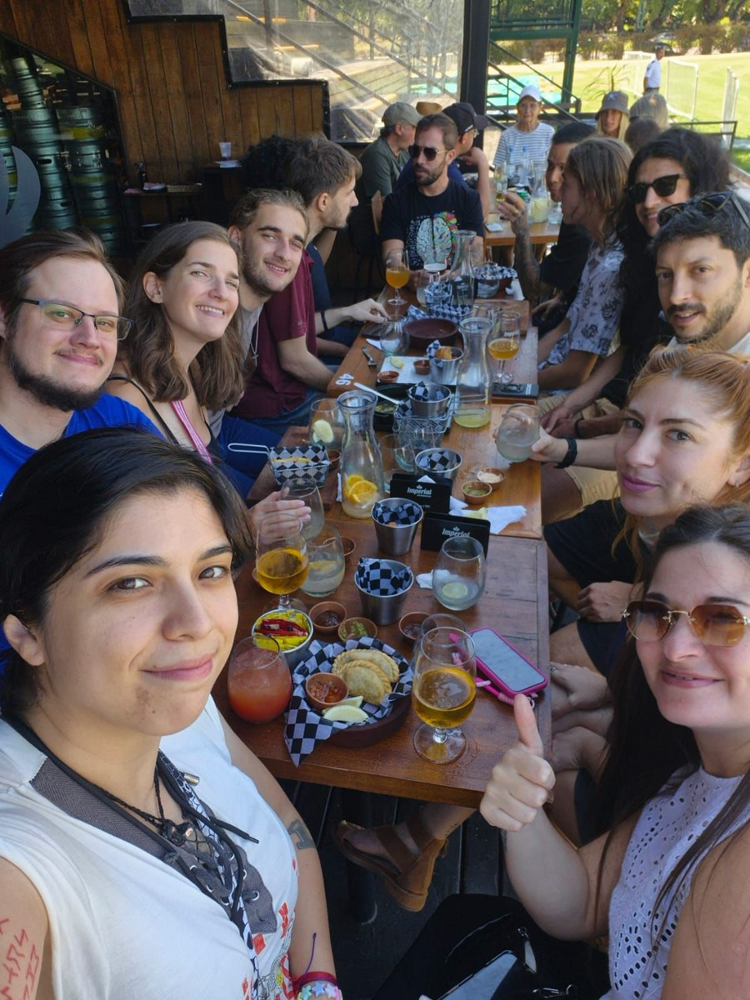
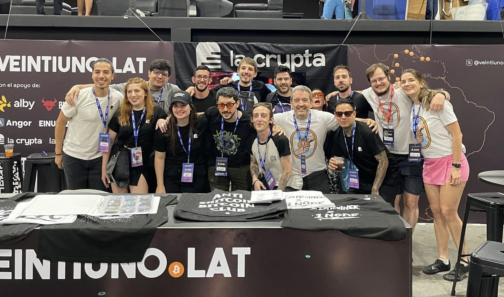
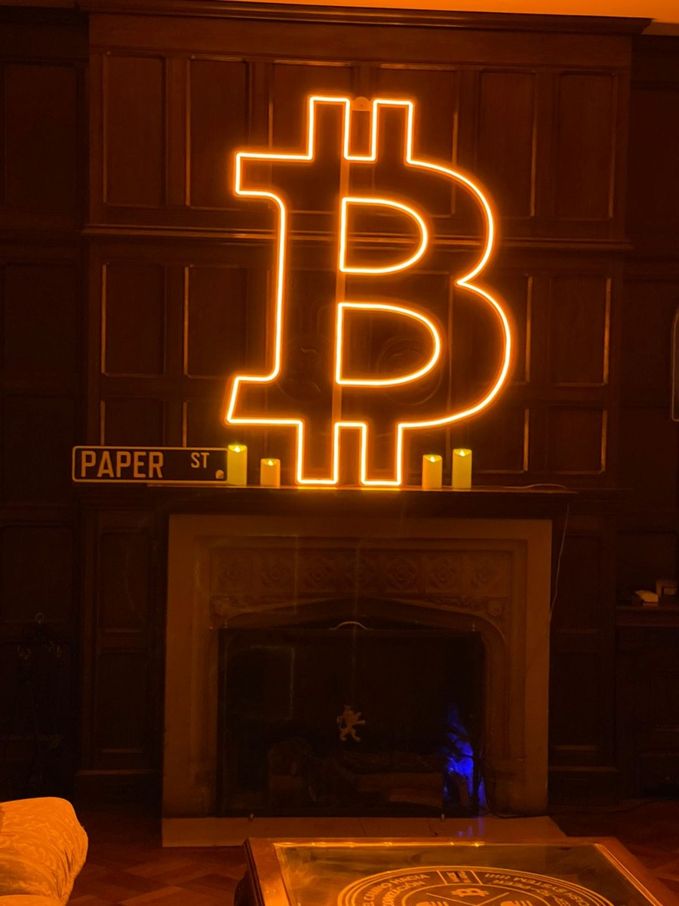
03 El mito
La queja más escuchada. Veamos qué hay detrás antes de responder.
Las comisiones suben cuando hay mucha demanda. En horarios pico, una transferencia puede costar varios dólares.
Un bloque sale cada ~10 minutos en promedio. Para pagar un café, eso es eterno.
¿Son ciertas?
La capa 1 se compara con la liquidación de un banco central: lenta, cara y definitiva.
Para pagar rápido y barato, el sistema tradicional usa una capa 2: Visa, Mastercard.
Bitcoin también tiene su capa 2: se llama Lightning.
04 Hablemos un poco de Lightning
Cada canal es un ábaco: sus pelotitas representan saldo. Pagás a Baba a través de Jaqui y Lalo, que reciben por un canal y envían por otro sin cambiar su total.
El pago se completa en conjunto. Ejemplo sin comisiones.
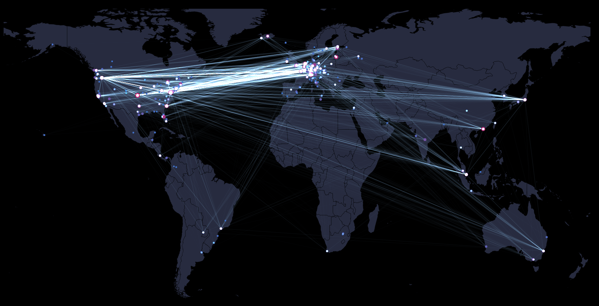
05 Wallets
Alguien guarda las llaves por vos. Fácil para empezar, pero tus sats dependen de un tercero.
Las llaves son tuyas. Más responsabilidad, nadie te puede congelar los fondos.
Para probar con poco, cualquiera. Para guardar, autocustodial.
Una dirección fácil de compartir para recibir sats por Lightning, como vos@wallet.example. Se parece a un email, pero no es un correo ni una dirección de Bitcoin on-chain.
Ejemplo ficticio. La wallet de quien paga consulta esa dirección y obtiene una factura Lightning para hacer el pago.
Elegís el nombre de tu dirección dentro del dominio del servicio. Ejemplo: tu usuario en Strike o LaWallet.
El servicio genera y te asigna el nombre inicial. Personalizarlo después puede requerir cumplir requisitos o pagar una suscripción. Ejemplo: WoS o ZEUS.
Podés recibir con una factura Lightning y compartirla como texto o QR. No tener una dirección no significa que la wallet no use Lightning.
Muy fácil · Ideal para empezar con poco
Te piden tus datos · Si la empresa te bloquea, no tenés tus sats
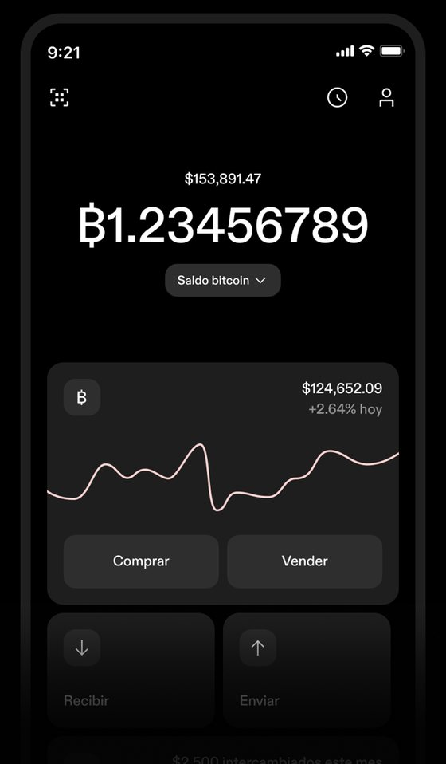
Varios activos en una app · Claves propias · Alias tether.me para facilitar transferencias
App cerrada · Servicios externos · Los tokens del emisor pueden ser congelados
Autocustodia no elimina la confianza en el emisor de los tokens. Revisá siempre el activo y la red antes de enviar. Sitio oficial ↗
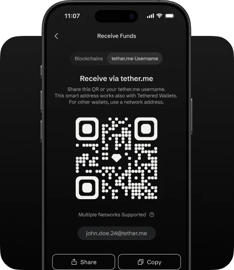
Pagar por Lightning sin abrir tus propios canales.
Spark no es Lightning ni una blockchain nueva. Es un protocolo que transfiere el control de bitcoin fuera de la cadena principal mediante firmas compartidas entre usuarios y operadores.
BTC en la cadena principal.
↓ 1. Depositás BTC en Spark
2. Transferís el control del BTC fuera de la cadena, sin una transacción on-chain por cada pago.
Coordinan y participan en las firmas. No pueden mover el BTC sin la firma del usuario.
↓ 3. Podés salir o pagar en otra red
Volvés a on-chain. Tiene tiempos y costos de la red.
Un proveedor conecta Spark con Lightning; no abrís tus propios canales.
Claves propias · Código abierto · Aprendés a usar canales Lightning
Requiere sincronización · Liquidez y costos de canales · Más responsabilidad por los respaldos
LN Address mediante Lightning Box: según la FAQ oficial, requiere Android y modo persistente. El servicio puede ser del proyecto o una instancia propia; revisá sus condiciones y costos. Abrir canales automáticamente no elimina los costos ni la necesidad de liquidez. FAQ oficial ↗
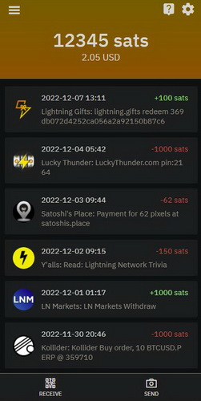
06 Manos a la obra
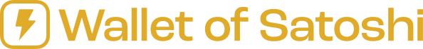
CustodialAutocustodial Código cerrado LN Address asignadaFácil para empezar · No necesitás abrir canales · En modo Spark tenés tus claves
App de código cerrado · En modo custodial dependés de la empresa; en Spark, de operadores para transferir
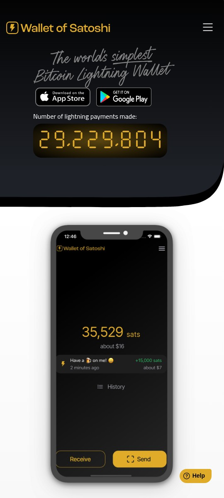
Cashu ofrece LN Address sin cargo; ZEUS Pay+ permite personalizar el nombre con una suscripción opcional. ZEUS puede ejecutar un nodo en tu teléfono con LDK o LND integrado, o conectarse a un nodo o una wallet remota. Acá mostramos dos rutas partiendo de LDK:
Pagás y recibís por Lightning usando los canales de una mint. No necesitás abrir canales propios; confiás en ella para canjear tus fichas.
Entre las mints que aparecen, recomendamos Minibits para probar con pocos sats, no para guardar ahorros. Su URL es https://mint.minibits.cash/Bitcoin; en este asistente no hace falta pegarla manualmente.
La mint es custodial, experimental y opera sin garantías: si falla o no canjea tus fichas, podés perder el saldo. Antes de cargar fondos, guardá tus respaldos siguiendo las indicaciones de ZEUS.
El video muestra la configuración y la inicialización, no un pago ni el respaldo. Los menús pueden variar según la versión. Documentación de Cashu en ZEUS ↗
Tu nodo en el teléfono, con tus claves y canales. Podés abrir un canal al recibir un pago (JIT), comprar capacidad por adelantado o financiarlo con bitcoin on-chain.
Podés empezar con Cashu y después pasar a canales propios. Abrir canales tiene costos; en LDK necesitás la frase de recuperación y el respaldo de canales.
Código abierto · Podés empezar simple y avanzar hacia canales propios
Cashu: riesgo de la mint · LDK: costos, liquidez y respaldos de canales
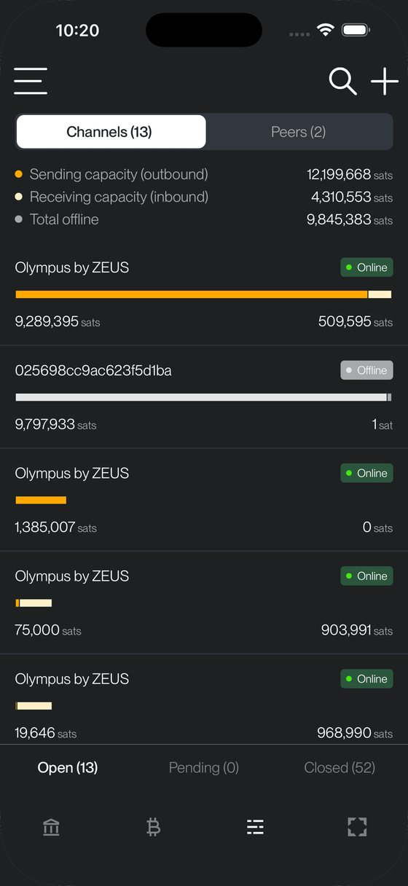
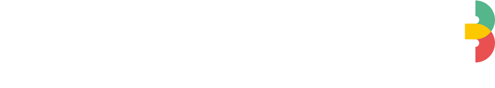
Autocustodia progresiva Código abierto LN Address personalizadaEscalá a tu ritmo · Dirección Lightning de la comunidad
Al inicio podés depender de una wallet de cortesía · Pasar a tu NWC es un paso más
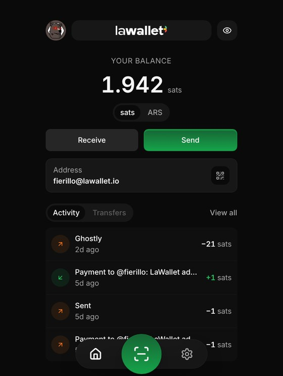
LaWallet
Varias Lightning Address.
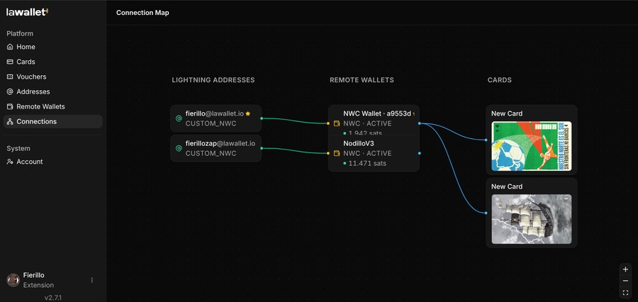
Para elegir la tuya
¿Tiene LN Address? ¿Quién tiene las claves? ¿El código es abierto? Compará los badges y abrí cada wallet para conocer sus condiciones, ventajas y límites.
¿Tiene LN Address? Elegís tu alias en el dominio de la comunidad. LaWallet ofrece la dirección; LNcurl o NWC conecta la wallet receptora.
¿Quién tiene las claves? Depende de la wallet que conectes. La de cortesía la administra un tercero; podés conectar una propia mediante NWC.
¿El código es abierto? Sí, el código de LaWallet se publica con licencia MIT. El badge enlaza al repositorio; no garantiza que la wallet conectada también sea abierta.
Recibís pagos con una dirección parecida a un email, sin montar un nodo. Podés conectar tu propia wallet más adelante.
LaWallet no cambia quién guarda tus fondos: eso depende de la wallet conectada. Conectar la tuya requiere un paso de configuración.
¿Tiene LN Address? Recibís una dirección aleatoria en ambos modos. Para personalizarla, WoS exige respaldo y actividad en la wallet; no necesariamente una suscripción.
¿Quién tiene las claves? Vos en modo Spark; la empresa en modo custodial, donde esté disponible. Los saldos y respaldos de cada modo son distintos.
¿El código es abierto? No se publica el código completo de la app. El badge enlaza al análisis de WalletScrutiny.
Una forma simple de empezar a pagar por Lightning, sin aprender a abrir canales.
En Spark tenés tus claves, pero transferir requiere operadores y al menos uno debe actuar honestamente. Retirar a la red Bitcoin puede ser lento y caro.
¿Tiene LN Address? Elegís tu nombre tether.me al crear la wallet. Permite recibir bitcoin desde wallets Lightning compatibles; no significa que esas wallets puedan enviar todos los demás tokens.
¿Quién tiene las claves? Vos, con una frase de 12 palabras. Ofrece respaldo cifrado opcional en la nube. La autocustodia no elimina el riesgo de los emisores de tokens.
¿El código es abierto? La app es cerrada aunque su kit de desarrollo WDK sea abierto. El badge enlaza a las condiciones oficiales.
Reúne bitcoin, pagos Lightning vía Spark, dólares digitales y oro tokenizado en una app, sin gestionar canales propios.
Las transferencias en Spark dependen de operadores y los pagos Lightning, de un proveedor que conecta ambas redes. Los dólares y el oro tokenizados pueden ser congelados por su emisor. El respaldo en la nube depende de tu cuenta y de sus servicios.
¿Tiene LN Address? Tu usuario elegido al registrarte forma usuario@strike.me. Elegís el nombre, no el dominio.
¿Quién tiene las claves? La empresa guarda los fondos por vos. No tenés una frase de recuperación: dependés del acceso a tu cuenta.
¿El código es abierto? No se publica el código completo de la app. El badge enlaza a las condiciones del servicio.
Fácil para comprar, recibir y pagar con bitcoin. Está disponible en Argentina.
Pide verificar tu identidad. No tenés una frase para recuperar los fondos por tu cuenta: dependés del acceso a tu cuenta y de la empresa.
¿Tiene LN Address? Elegís tu usuario y recibís en usuario@blink.sv. La dirección puede mantenerse al cambiar entre los modos disponibles.
¿Quién tiene las claves? Vos en modo Spark; la empresa en modo custodial, según la región. Con claves propias, las transferencias siguen dependiendo de operadores.
¿El código es abierto? Sí, la app publica su código. El badge enlaza al repositorio oficial.
Podés elegir cómo guardar tus fondos entre los modos disponibles, sin abrir canales Lightning.
En modo custodial confiás los fondos a la empresa. En Spark tenés tus claves, pero transferir depende de operadores y al menos uno debe actuar honestamente.
¿Tiene LN Address? Puede asignarte una dirección phoenixwallet.me mediante BIP353 y BOLT12. No es una dirección LNURL: quien paga necesita una wallet compatible con esos protocolos.
¿Quién tiene las claves? Vos, con tu frase de recuperación. ACINQ administra la conexión a Lightning y facilita liquidez, pero no guarda tus claves.
¿El código es abierto? Sí, el badge enlaza al código oficial de Phoenix.
Usa canales Lightning propios, pero la app los administra para que no tengas que hacerlo a mano.
ACINQ es tu conexión a Lightning y te facilita capacidad para recibir. Abrir o ampliar esa capacidad puede tener un costo.
¿Tiene LN Address? No ofrece una dirección propia reutilizable tipo usuario@dominio. Puede recibir por factura Lightning; no confundas esa factura con una LN Address.
¿Quién tiene las claves? Vos, con su sistema de recuperación propio. El Emergency Kit y el código de recuperación son importantes; no usa el respaldo habitual de 12 palabras.
¿El código es abierto? Sí, el badge enlaza al repositorio de la app.
Maneja bitcoin en la red principal y permite pagar por Lightning desde una interfaz simple.
Para usar Lightning hace una conversión entre redes. Dependés de ese servicio y el costo puede subir cuando la red Bitcoin está congestionada.
¿Tiene LN Address? No ofrece una dirección nativa tipo usuario@dominio. Sí puede recibir por factura Lightning con la capacidad de entrada necesaria.
¿Quién tiene las claves? Vos, con tu frase de recuperación y los respaldos correspondientes. Blocktank facilita canales y liquidez, no la custodia de tus claves.
¿El código es abierto? Sí, el badge enlaza al repositorio oficial de Bitkit.
Bitcoin y Lightning con tus propias claves. La app integra ayuda para abrir canales y recibir pagos.
Usa Blocktank para facilitar capacidad de recepción. Es un servicio del que dependés, aunque no guarde tus claves.
¿Tiene LN Address? Registrás tu nombre mediante Lightning Box. Según la FAQ oficial, requiere Android y modo persistente; no se asigna automáticamente al instalar.
¿Quién tiene las claves? Vos: el nodo Lightning funciona en tu teléfono. Tenés que respaldar la semilla y los canales, y cuidar su liquidez.
¿El código es abierto? Sí, el badge enlaza al código de Blixt.
Te permite aprender a usar tu propio nodo y tus canales, con opciones para automatizar parte del trabajo.
Requiere más aprendizaje, batería y cuidados. Tenés que entender cómo respaldar y recuperar tus canales.
¿Tiene LN Address? La app no ofrece una propia. Un servicio conectado puede proveerla por separado; el badge describe la app, no todos los proveedores posibles.
¿Quién tiene las claves? Bitcoin: vos. Lightning: depende del servicio que conectes. El badge mixto resume esas opciones, no garantiza autocustodia en cualquier conexión.
¿El código es abierto? Sí, el badge enlaza al repositorio de BlueWallet.
Una buena opción para manejar bitcoin en la red principal y conectar servicios adicionales.
Lightning requiere otra conexión, como LNDHub o Arkade. La custodia y las dependencias cambian según ese servicio; la app sola no las resuelve.
¿Tiene LN Address? ZEUS Pay ofrece un nombre asignado al configurarlo. Con Cashu no hay cargo por la dirección; personalizar el nombre mediante Pay+ requiere una suscripción. El modo de recepción puede ser Cashu, Zaplocker o NWC.
¿Quién tiene las claves? Vos en modo nodo. En Cashu, el emisor guarda el bitcoin que respalda tus fichas. Una conexión remota depende del nodo o wallet conectada.
¿El código es abierto? Sí, el badge enlaza al repositorio oficial de ZEUS.
Podés usar un nodo en el teléfono o conectar uno propio. En esos modos tenés control de tus claves y canales.
El control trae más aprendizaje y responsabilidad por los respaldos. Cashu es otro modo: confiás el bitcoin a un emisor.
¿Tiene LN Address? Al iniciar sesión con una cuenta JAN3, recibís un nombre asignado @aqua.net. La personalización es opcional y paga. Los pagos entrantes se convierten en L-BTC en Liquid mediante swaps; no necesitás canales propios.
¿Quién tiene las claves? Vos, con tu frase de recuperación. Liquid es una red distinta de Bitcoin y tiene sus propias dependencias; los pagos Lightning usan servicios de conversión.
¿El código es abierto? Sí, el badge enlaza al repositorio de AQUA.
Permite manejar bitcoin en Liquid y pagar comprobantes Lightning mediante una conversión.
No tiene canales Lightning propios. Indra sirve para salir por Lightning; la recepción por LN Address usa otra vía de swaps. Dependés de los servicios de conversión y de la red Liquid.
07 Créditos
A todos los que hicieron este workshop posible
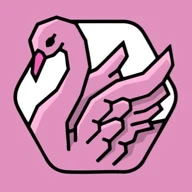
Jaqui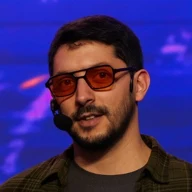
Andy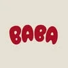
Baba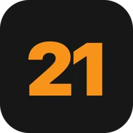
Veintiuno.lat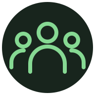
A todos los que vinieron hoy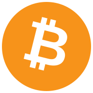
Simplemente, a Bitcoin.